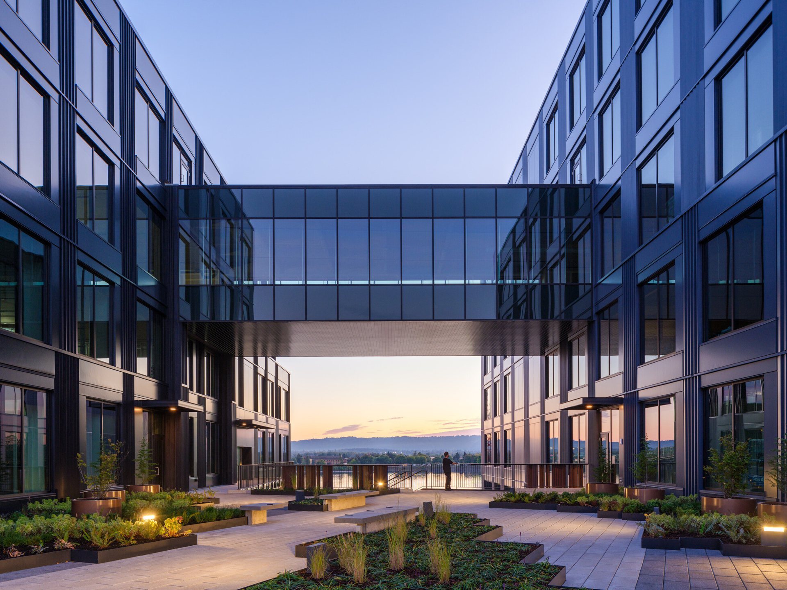
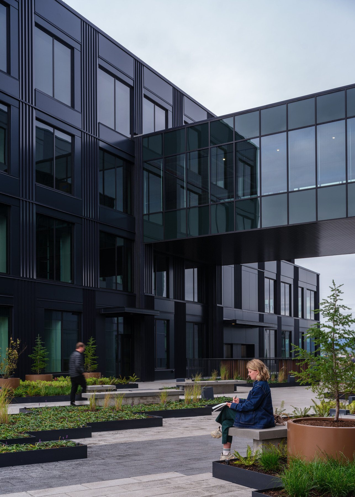
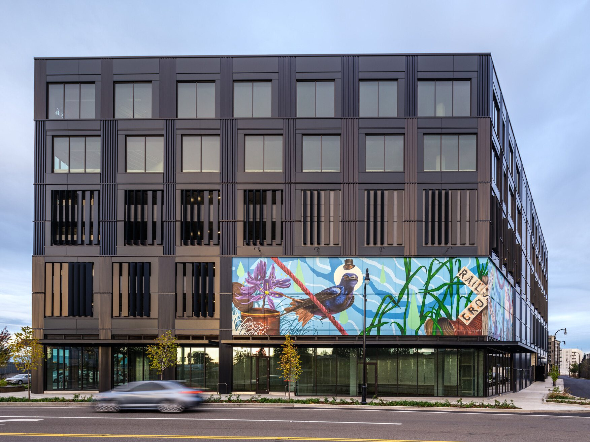
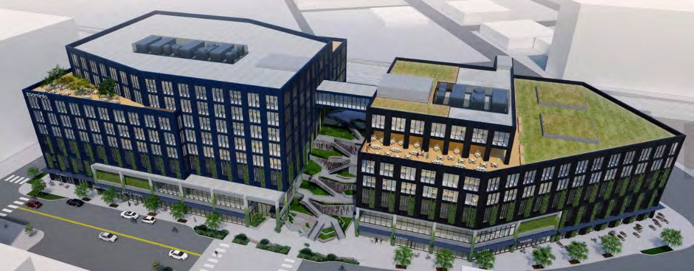

Port of Vancouver, Terminal 1 and Block 2

- Role
- Architectural Designer
- Office
- DLR Group, Portland (architect of record)
- Client
- Port of Vancouver USA
- Location
- Vancouver, Washington
- Size
- Terminal 1: two office buildings of 9 and 10 storeys, 287,000 sf of office space and 347,000 sf of parking
- Status
- Terminal 1 opened in September 2024, LEED v4 Gold (core and shell); Block 2 on hold in design development
- Source
- DLR Group project page
Part of the revitalisation of the Columbia River waterfront.
Terminal 1
A mixed-use office building above retail and a parking podium, with five levels of parking, five levels of office space and green roof terraces. The concept, “Launch”, refers to the port's shipping history: a large public staircase and courtyard connect the street to downtown.
My role
I worked on documentation and construction for Terminal 1, produced detailed drawings of the exterior facade, and worked closely with the design architect and consultants to carry the design intent through.
Block 2
A twelve-storey residential building with 240,000 sf of apartments and 12,000 sf of retail. From schematic design through design development, I coordinated the apartment layouts to standardise ten unit types across the building.




Published by DLR Group
Photographs courtesy of DLR Group. Read more on the DLR Group project page